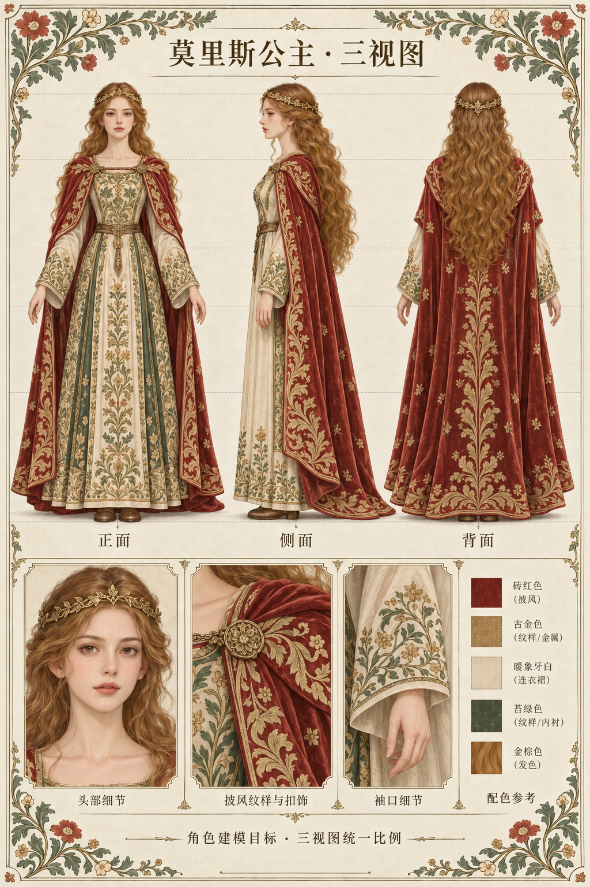
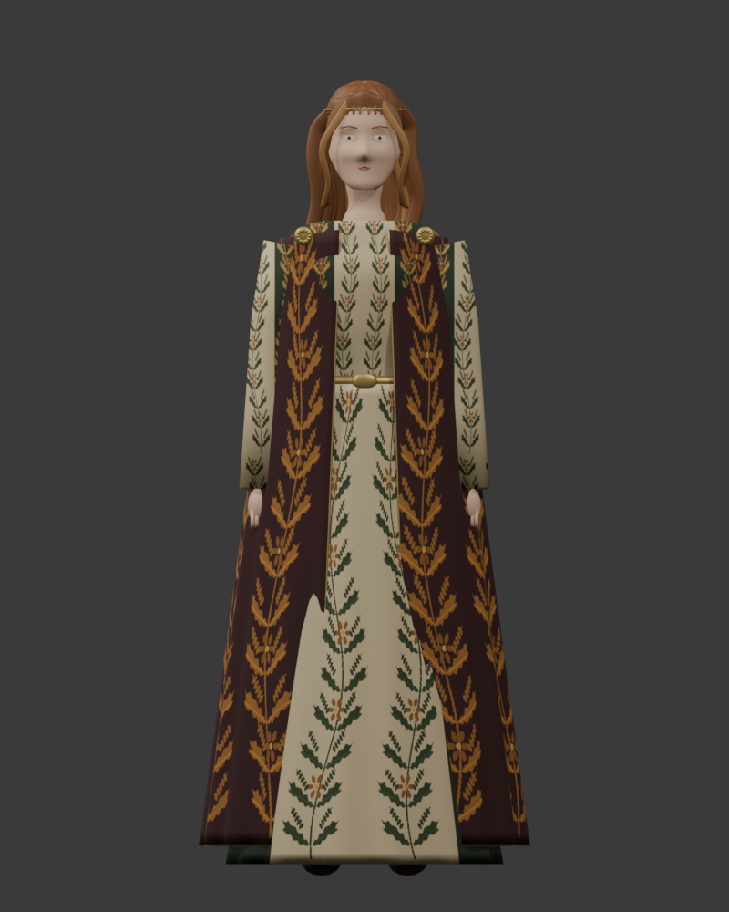
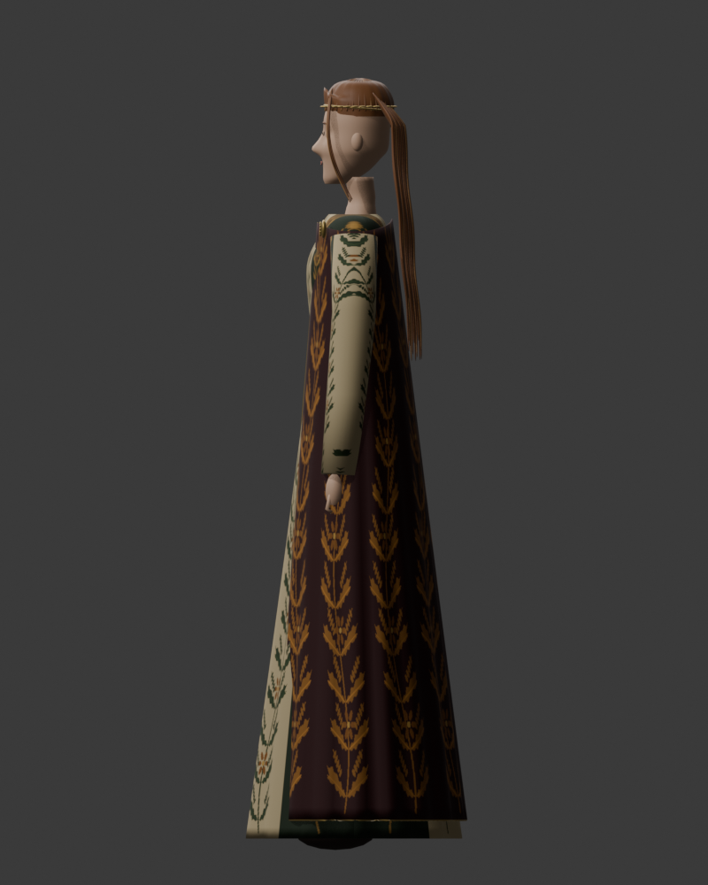
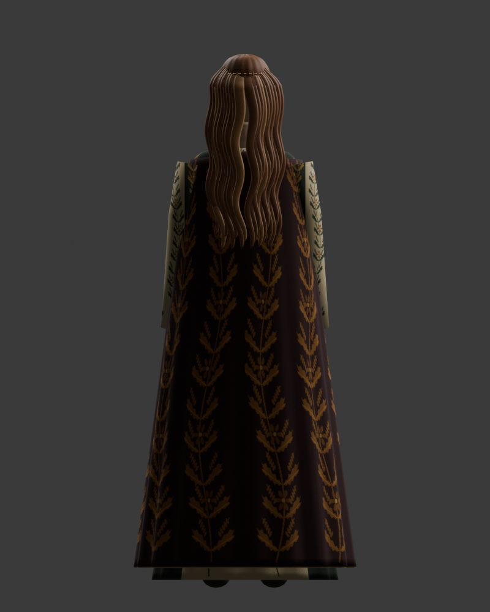
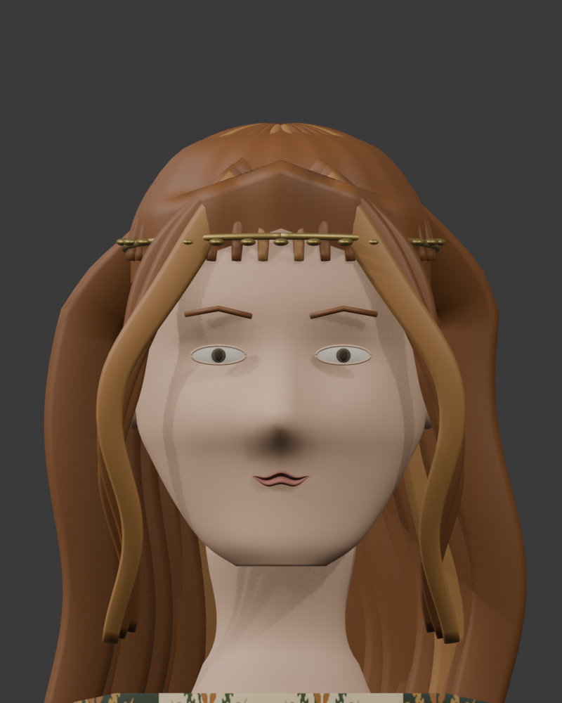
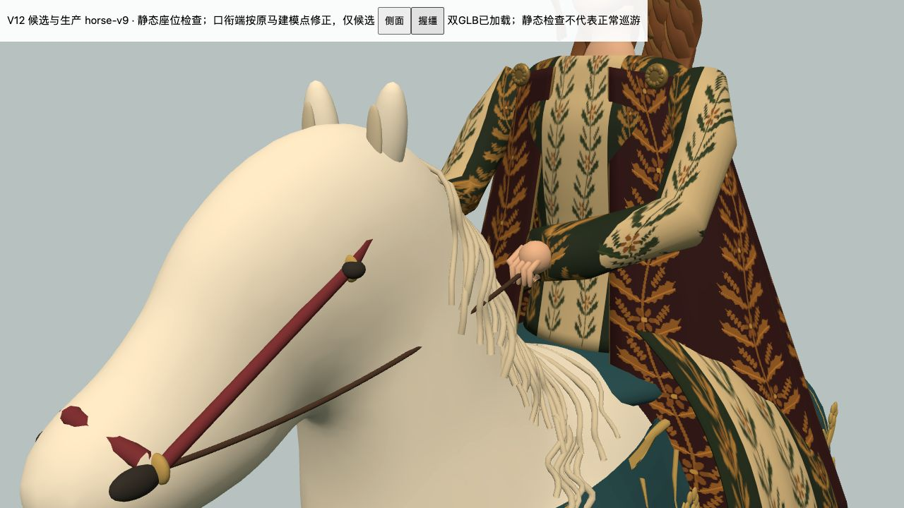
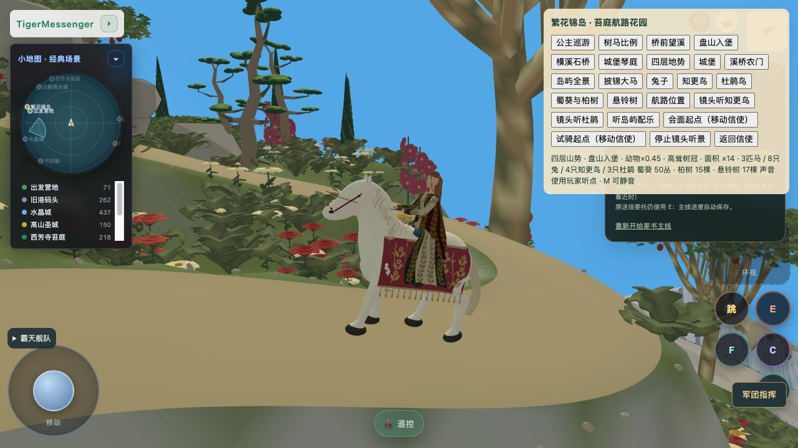
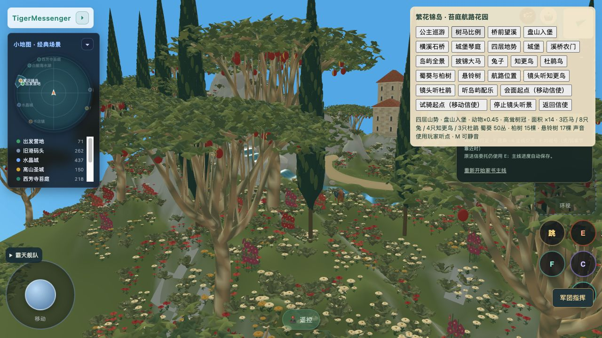
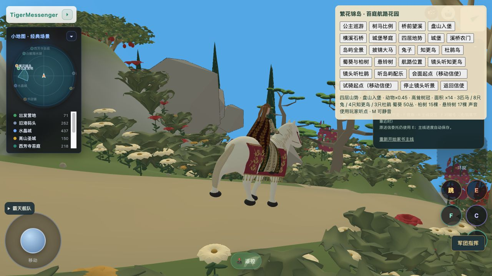
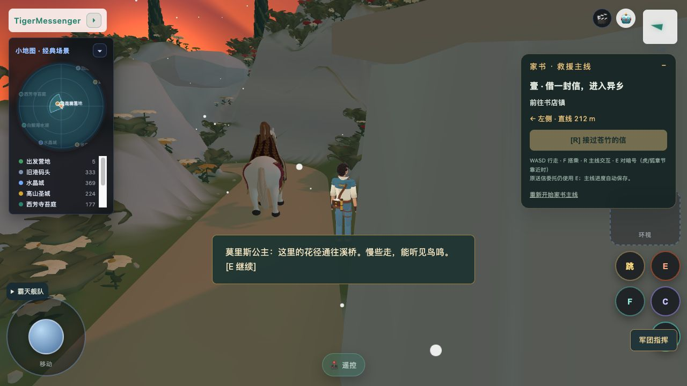

尚未达到认可目标。正式默认仍为 V5；V13 是独立候选，未宣称完成。所有历史源、Blend、GLB 和拒绝版本均保留。
候选正侧背 / 头部 WebGL · 原白马静态骑姿及握缰 · 正常游戏路线：明确选择 V13 候选 · 最新状态








V13正常加载运动记录 · 停马交谈记录 · 恢复巡游记录
缩短头颈连接；新站姿与骑乘衣裙；连续包肩、侧面与背面披风；植物纹样 UV 贴图；收拢手指握缰；长发由螺旋改为分组平面波浪。采用原角色关节空节点，未声称骨骼蒙皮或图生 GLB。
五官神态、鼻尖、眼睑和头顶发流仍缺乏目标中的自然度；卷发与刺绣还过于规则。V13 正常游戏已确认加载、运动、E停马交谈并恢复；动态口衔接触和完整往返仍待补。V12 正常路线采样可见已加载且移动，但没有完整往返验收。JEV 只处理文字分流，不代表美术通过。未取得《身骑白马》伴奏音源，未声称听过；原 BGM 保留。

